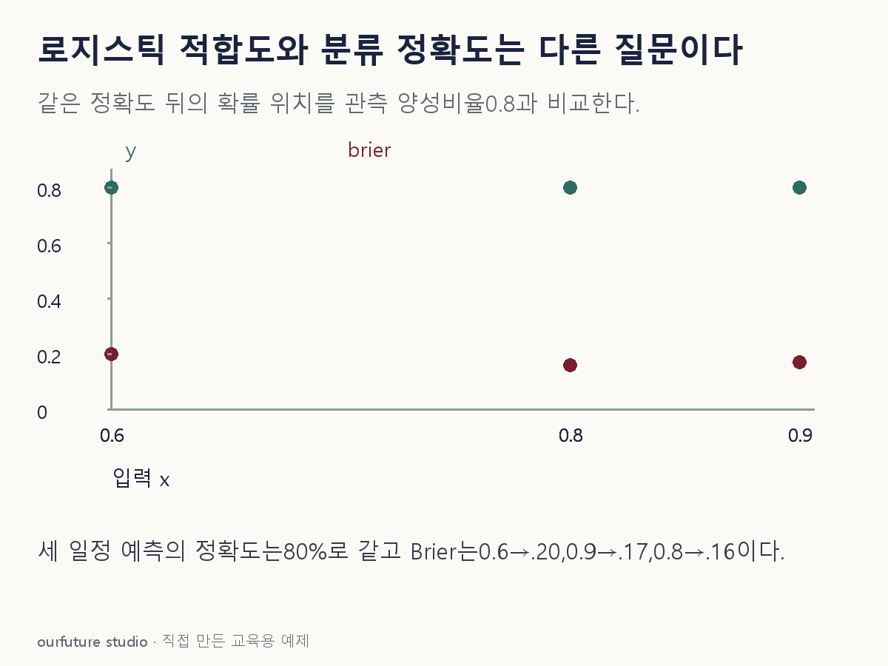

핵심 이론
로지스틱 회귀는 각 입력에서 사건이 생길 확률을 추정한다. 정확도는 그 확률을 임곗값으로 잘라 라벨을 만든 뒤 전체에서 몇 개 맞혔는지 센다.0.6과0.9가 모두0.5를 넘으면 둘 다 양성 판정이다. 따라서 같은 라벨이면 정확도는 같지만 실제로 양성이 생기는 비율을 얼마나 잘 표현하는지는 다를 수 있다. 한 지표가 다른 질문의 답까지 대신한다고 읽지 않는다.
확률을 진단할 때는 예측확률이 비슷한 관측을 묶어 평균 예측확률과 실제 양성비율을 비교하는 보정곡선 등을 사용할 수 있다. 독립 평가자료에서 전체 적합·비선형성·누락 구조를 검토하는 목적과, 임곗값별 오류비용을 확인하는 목적도 구분한다. Brier 점수처럼 확률과0·1 결과의 제곱차를 평균하는 값은 확률 평가의 한 예이며, 그 값 하나가 모든 적합도 문제를 증명하는 것은 아니다.
대표적인 Hosmer–Lemeshow 진단은 예측확률에 따라 그룹을 만들고 관측·기대 사건 수를 비교하지만 그룹 구성과 표본 크기의 영향을 받는다. 유의하지 않다고 완벽한 모형이 확인되거나 분류 성능이 높은 것으로 확정되지 않는다. 아래의 단순10건 집계는 확률정보가 정확도에 가려질 수 있음을 보여주는 자체 계산이며, 적절한 그룹 수와 표본을 갖춘 실제 적합도 검정을 수행한 결과가 아니다.
작은 예제로 확인하기
독립적인 자체 평가10건에서 실제 양성8건·음성2건이다. A는 모든 건에 양성확률0.6, B는0.9를 주었다고 둔다. 두 모형 모두 임곗값0.5에서 전부 양성으로 판정한다.
| 모형 | 양성확률 | 정확도 | 확률 제곱오차 평균 |
|---|---|---|---|
| A | 0.6 | 80% | 0.20 |
| B | 0.9 | 80% | 0.17 |
A의 확률 제곱오차는[8×(1−0.6)²+2×0.6²]/10=0.20, B는0.17이다. 라벨 정확도는 같아도 확률 평가값은 다르다. 작은10건만으로 보정이나 전체 적합도 우열을 일반화하지 않는다. Brier 점수는 보정만 따로 재는 지표가 아니다. 확률과 결과의 제곱오차에는 판별력과 자료의 불확실성도 함께 반영될 수 있어, 일반적인 두 모형에서 Brier가 작다는 사실만으로 더 잘 보정되었다고 결론내리지 않는다. 이 예제처럼 모든 예측이 일정한 단순 상황과, 입력 집단마다 다른 확률을 내는 실제 모형을 구분한다.
그림으로 확인하기

직접 고르기
자체 평가 10건은 양성 8건·음성 2건이다. A의 양성 확률은 모두 0.6, B는 모두 0.9다. 임곗값 0.5에서 둘 다 전부 양성으로 판정한다.
이 기록에서 가능한 판단은?
- 1. 정확도가 같으므로 확률 적합도도 같다
- 2. 두 모형의 정확도는 80%지만 확률 평가는 다를 수 있다
- 3. B의 정확도는 90%다
- 4. 정확도가 같으므로 적합도 검정은 불필요하다
정답과 오답의 이유 확인하기
정답 2번 — 두 모형의 정확도는 80%지만 확률 평가는 다를 수 있다
둘 다 실제 양성 8건만 맞혀 정확도 80%다. 그러나 예측 확률 자체가 다르므로 관측 양성 비율과의 일치나 확률 오차는 달라질 수 있다.
- 1번: 임곗값으로 버린 확률의 차이를 라벨 정확도만으로 복원할 수 없다.
- 3번: 0.9는 모형이 내놓은 확률이며 실제 정답을 맞힌 비율이 아니다.
- 4번: 같은 정확도는 확률모형의 형태·보정·누락 구조 진단을 면제하지 않는다.
조건 하나 바꾸어 풀기
모든 건의 양성 확률을 0.8로 주는 C를 추가한다. 같은 평가 자료에서 정확도와 확률 제곱오차 평균은?
풀이: 정확도 80%, 제곱오차 평균 0.16이다.
[8×0.2²+2×0.8²]/10=0.16이다. 이 자료에서는 실제 양성 비율과 일정 예측 확률이 맞지만, 다른 조건부 집단까지 잘 맞는다는 증명은 아니다.
다시 떠올릴 단서
같은 라벨 뒤에 다른 확률이 숨어 있다.
근거와 적용 조건
- scikit-learn Probability calibration — Calibration curves의 예측확률·양성관측비율과 적절한 평가자료. 확인일 2026-10-30.
- Stata Logistic regression: Introduction — Goodness-of-fit test의 확률별 그룹과 Hosmer–Lemeshow의 그룹 수 민감성. 해당 절 본문 직접 확인. 확인일 2026-10-30.
상황·수치·보기·조건 변경은 자체 교육 예제다. 민간 복원 문항의 공식 정답이나 실제 성능·학습 효과를 뜻하지 않는다.
읽은 내용을 적용해 보기
양성8·음성2·동일 상수확률·문턱.5의 자체 평가다. H-L 검정이나 실제 모형 보정 평가를 수행하지 않는다.